Project Overview
Vision Venture is a subproject of USC Viterbi where current students interview recent alumni about their educational and professional experiences to help students see beyond the immediate horizon of course work, as well as reconnect with the “why” that led them to engineering in the first place. The project hopes to promote the students' sense of agency, reignite their professional purpose, and help them forge their identity.
Our four-person team is passionate about connecting current students with alumni to make the "vanishing point" that is graduating something less frightening for students.
The Process
→ Brainstorming
I first started planning out my design by consulting the project lead to understand the core idea of Vision Venture and categorizing the content that would be included in the website.
→ Low-Fidelity Model
The next step was creating a lo-fi model. At this stage, I was in constant communication with the team's developer to ensure my designs were plausible. This stage took the longest, as I had a lot of ideas for all the content that was going to be included. I made multiple versions of the same component, for each component. Then, as a team, we sifted through them and chose the most suitable version for the overall website design.
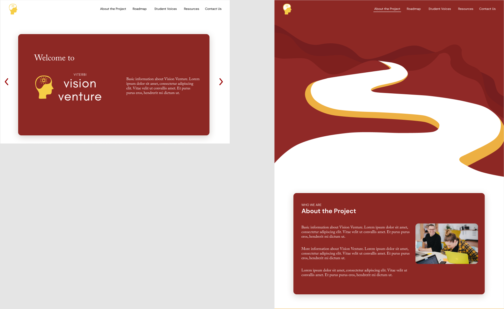
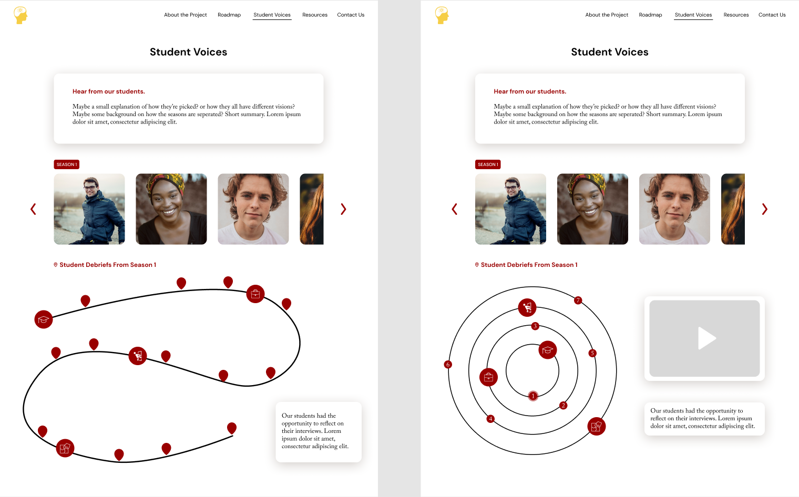
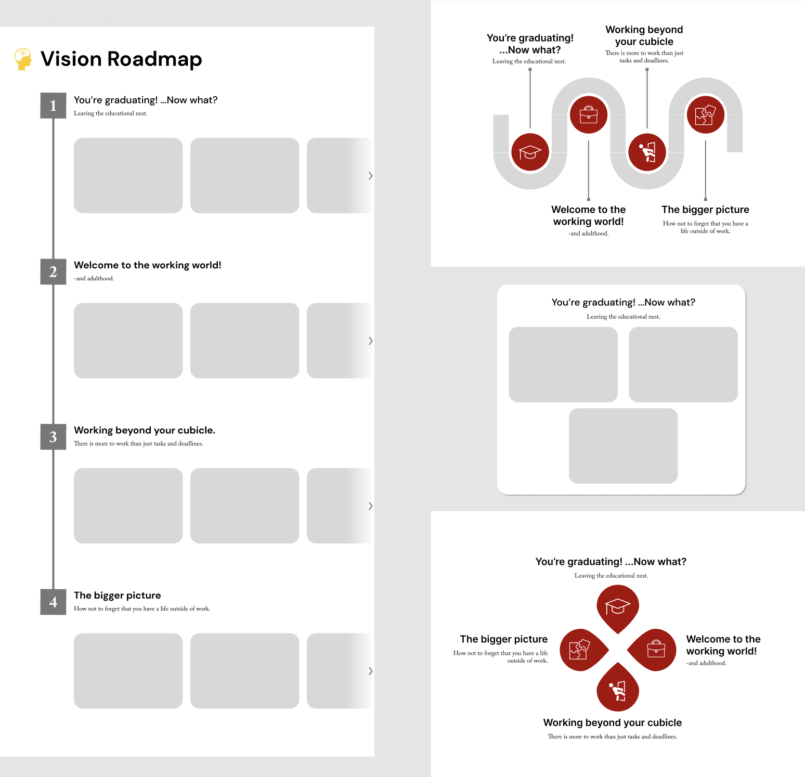
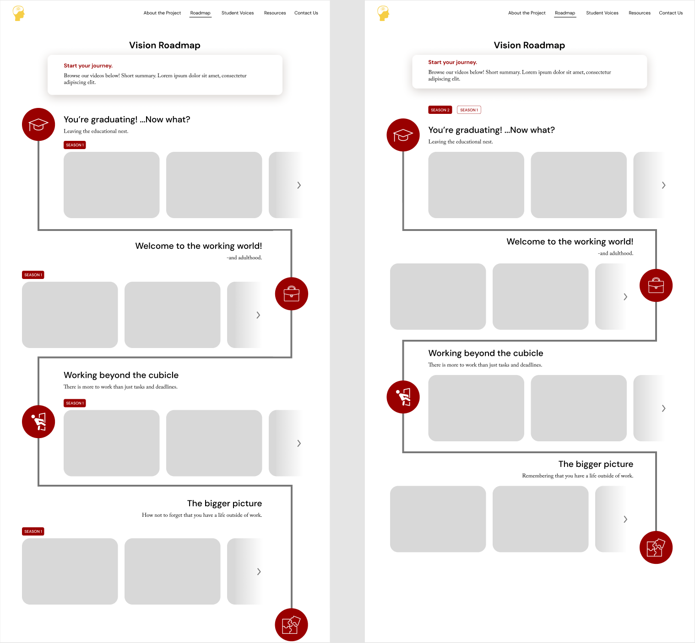
→ Thumbnail Design
I then got started on designing thumbnails for the videos that were going to be included in the "Vison Roadmap" page of the website. These thumbnails were illustrations that summarized the key points stated in the videos.
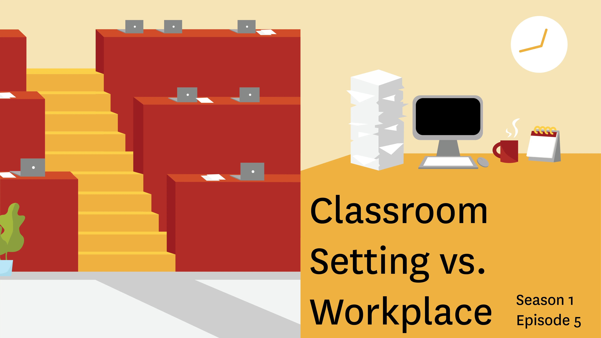
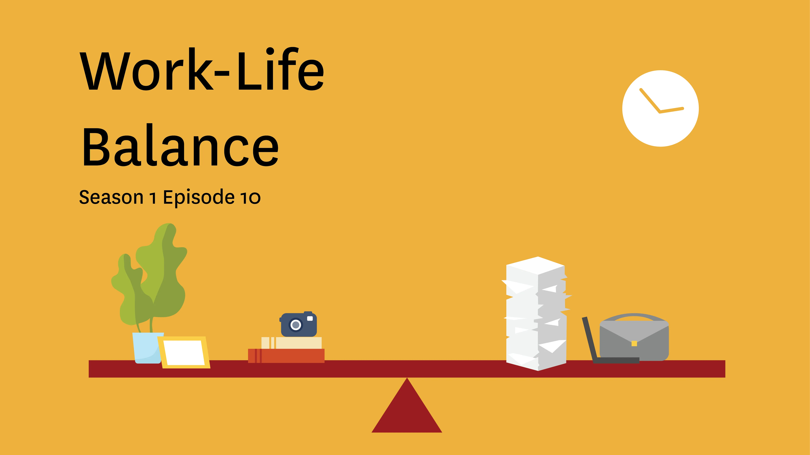
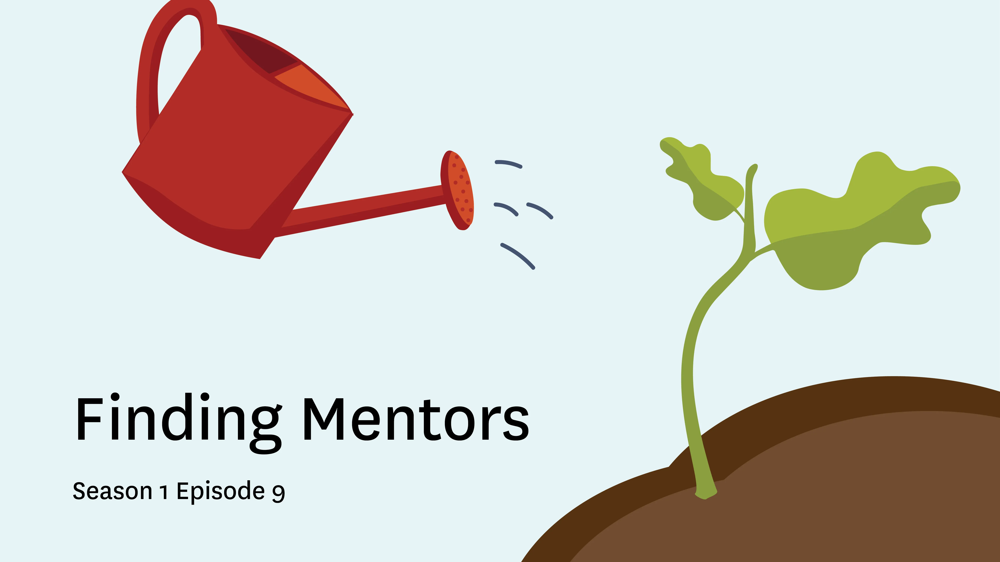
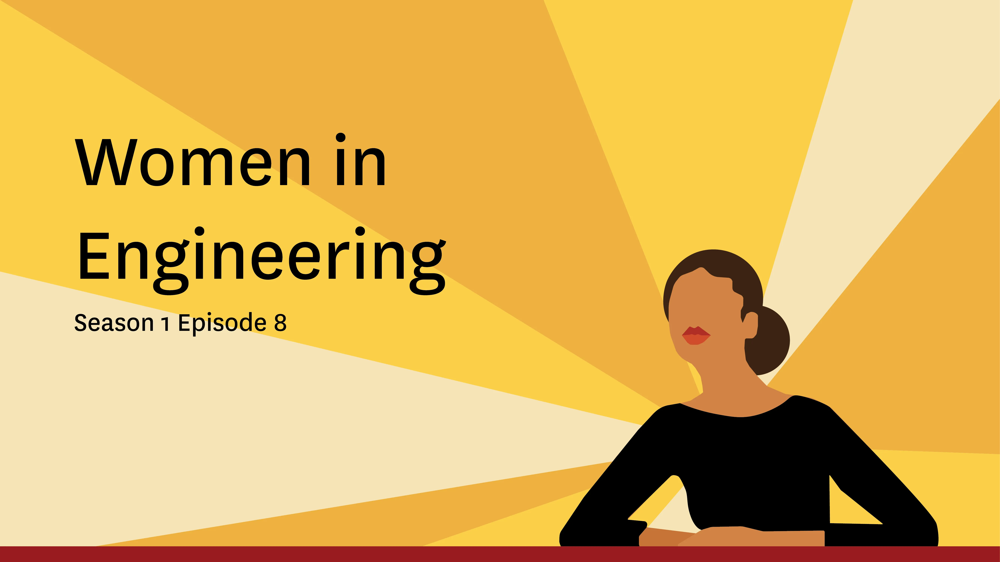
→ High-Fidelity Model
Lastly, I made the high-fi model where I went into more depth and details. This was the stage were I experimented with different accent colors and small illustrations to make the Vision Venture website a little more unique than any other USC affiliated website. I designed and added new illustrations to add personality and engagement to the website design. Finally, I made different versions of the designs for various screen sizes.
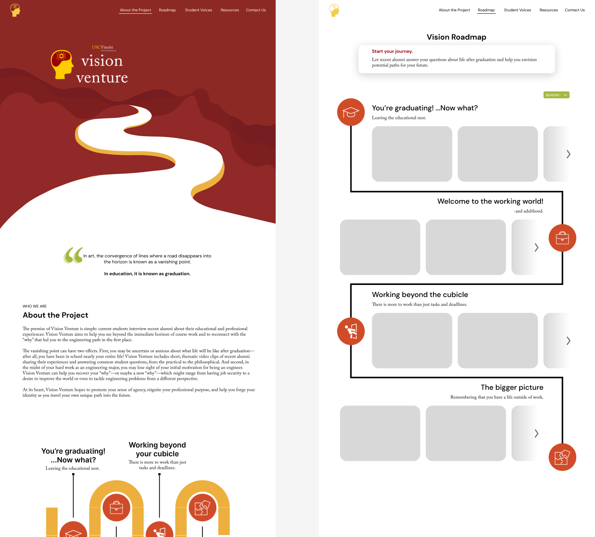
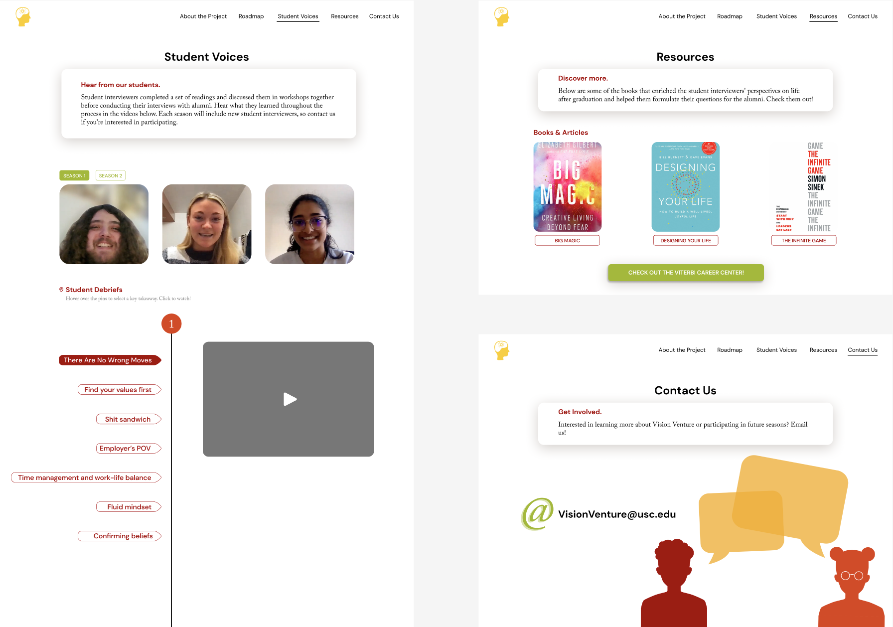
Tools Used
Figma
Adobe Illustrator
Adobe Photoshop
Key Takeaways
1. Plan ahead.
It's important to have a plan when getting into a long-term project. I planned out every single step to have a specific timeline that would work for both me and the developer I collaborated with.
2. Adjust.
Sometimes the initial design and the development process differ. I learned to adapt and adjust my designs to make them more accomodating to what was actually prossible to make by the developer.
3. Add your voice.
Because the project was affiliated with USC, I needed to create a design that would follow a specific style guide. However, I think that it's important to include your voice as a designer in your designs, and I was able to find an intersection of both.
Project Gallery
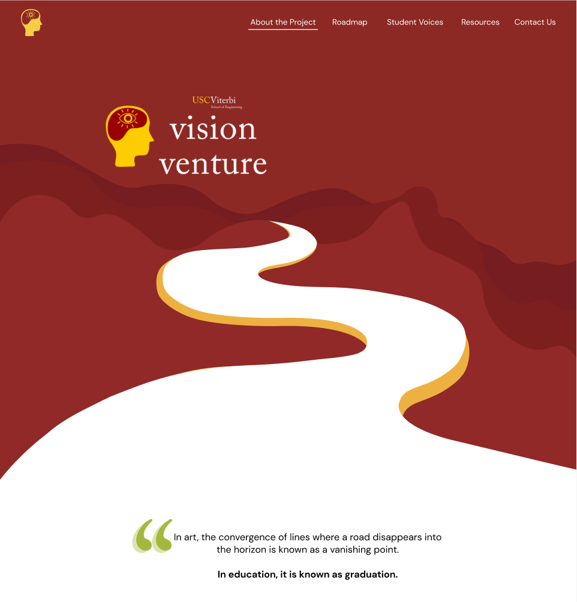
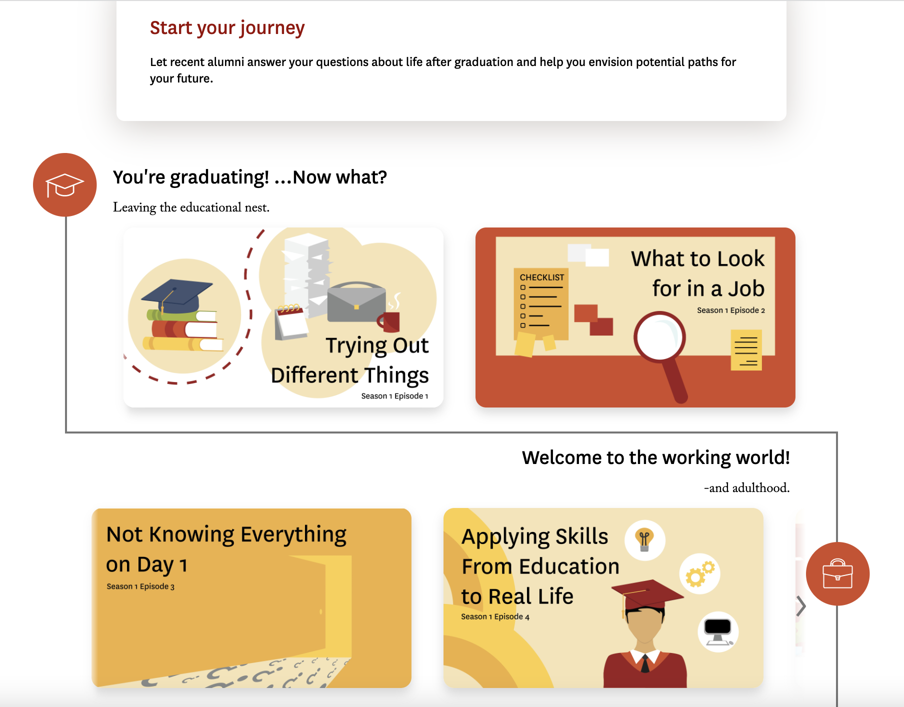
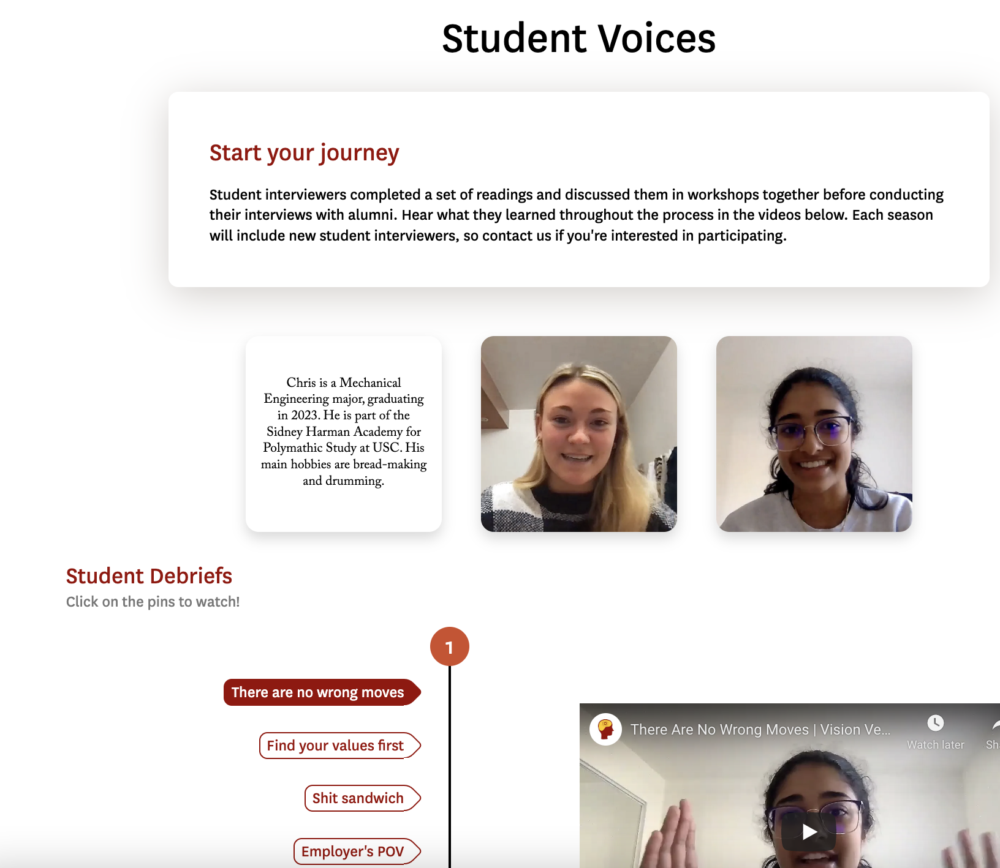
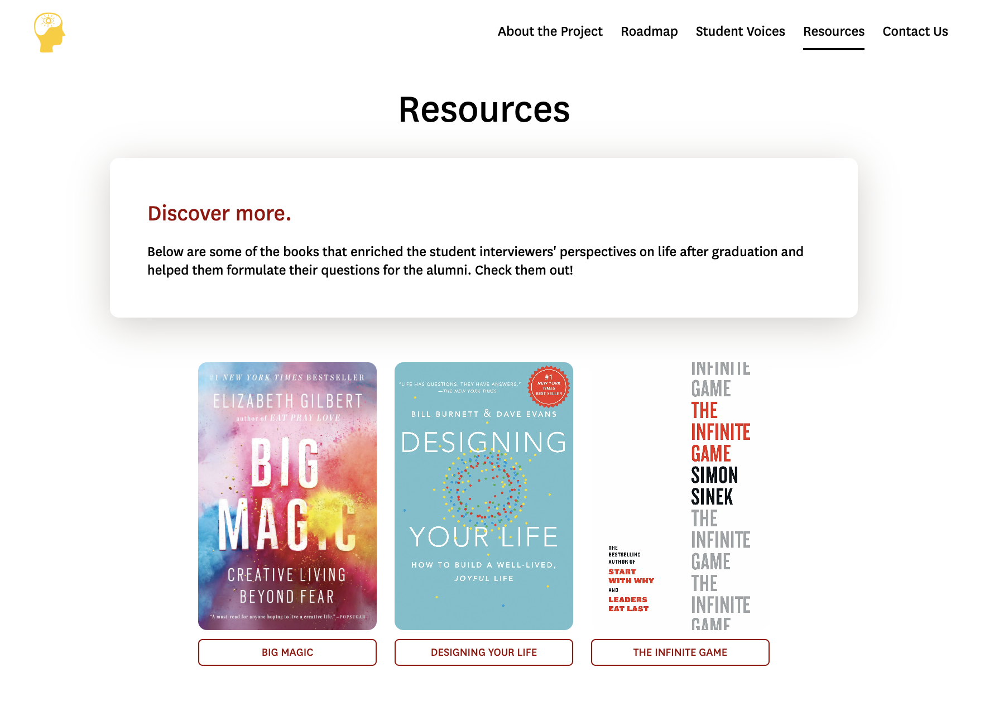